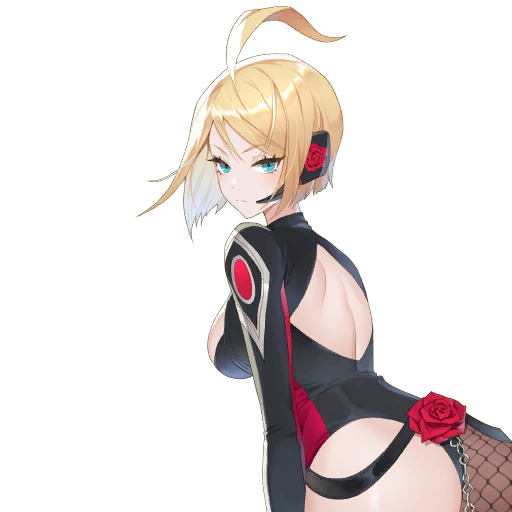
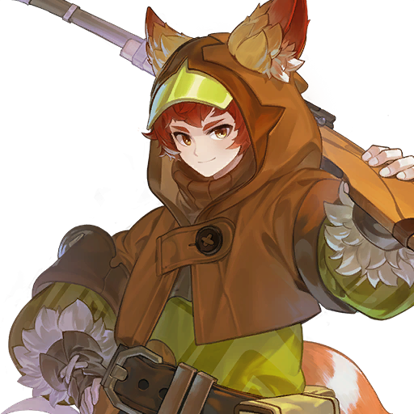
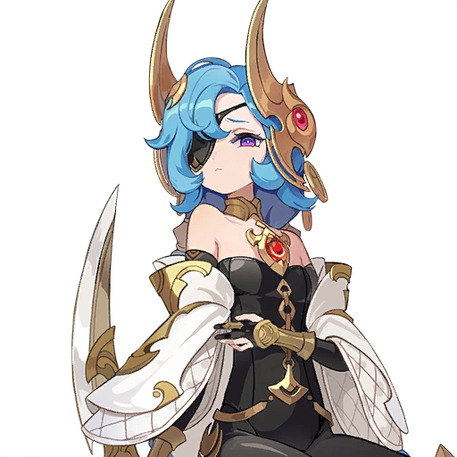
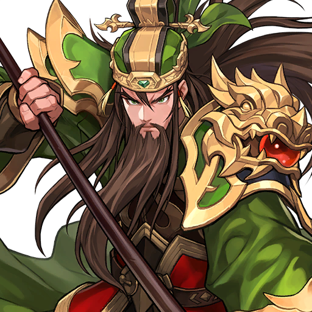
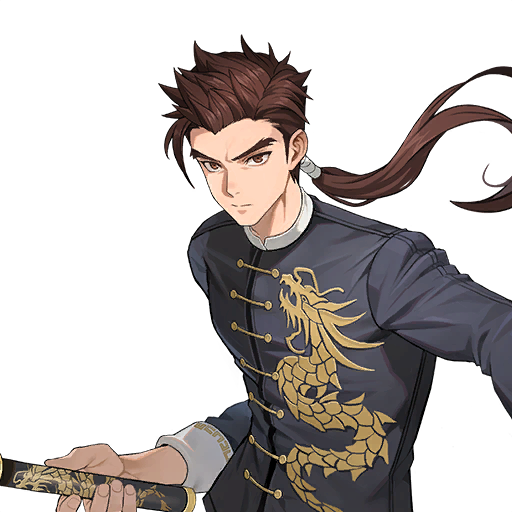

🐉 Raid: Cách xây đội và farm trang bị đầu tiên
Khi Hero đã luyện xong, Raid là nguồn trang bị chính của bạn. Bài này hướng dẫn từ đầu: Raid mở ở đâu, tốn gì, đánh Boss nào trước, xếp đội đầu tiên ra sao và farm trang bị như thế nào cho hiệu quả.

🐉 Raid là gì, vì sao người mới phải đi
Raid là nội dung PvE theo tầng: mỗi Boss có 15 tầng (Tier 1–15), tầng càng cao càng dễ ra trang bị hạng cao. Đây là nguồn trang bị chính khi Hero của bạn đã luyện xong — trang bị farm từ Raid dùng để build đội PvE lẫn PvP về sau.
Mở khóa và chi phí
- Mở khóa: qua Adventure 4-10.
- Chi phí mỗi lượt: 12 Key hoặc 2 Raid Entry Ticket. Vé lấy từ Honor Point Exchange Shop (điểm Honor nhận từ bạn bè) hoặc event.
- Thưởng lần đầu: 100 Ruby cho mỗi tầng qua lần đầu.
- Gói trả phí Daily Enhancement Support (28 ngày): cho thêm 15 lượt miễn phí mỗi ngày — không bắt buộc, chỉ là lựa chọn tăng tốc.
Ba công cụ miễn phí trong game mà người mới hay bỏ qua
- Booster Mode: sau khi qua một tầng thì mở Booster cho tầng đó — tốn Key gấp 2–3 lần nhưng thưởng cũng gấp 2–3 lần, farm hiệu quả nhất khi đã qua ổn định.
- Clear Records: nút ở góc dưới trái màn hình xếp đội — xem đội người khác đã dùng để qua tầng đó, có thể sao chép đội đó về dùng.
- Nút Strategy: nằm bên trái nút Enter của từng Raid — xem Hero được gợi ý rồi xếp đội theo đó.
Cut-in và retry miễn phí: khi HP Boss xuống dưới một nửa mà có cut-in thì cuối trận nhận thêm Equipment Crafting Materials. Retry không tốn Key — nên retry khi không có cut-in nếu bạn đang farm nguyên liệu chế tạo.
⚔️ Ba Boss Raid và cách nhận biết
Chỉ có 3 Boss Raid thường. Mỗi Boss gây hiệu ứng khác nhau, kháng hệ khác nhau và cần DPS khác nhau — xếp nhầm đội là thua ngay từ lúc chọn Hero. Bảng dưới tóm tắt những gì bạn cần nhớ trước khi vào trận.


| Boss | Hiệu ứng Boss gây ra | Miễn nhiễm bắt buộc | DPS nên dùng | Cơ chế chính |
|---|---|---|---|---|
| Destroyer Gaze | Stun, Burn; Boss tăng Attack mỗi lượt; kháng Phép | Stun: Evan, Sieg · Burn: Ariel, Yui, Ryan | Vật lý đơn mục tiêu, Crit (Shane, Bai Long, Jupy, Catty) | Dùng đòn đơn mục tiêu (đòn diện rộng sát thương thấp hơn); buff/debuff dài nhất dùng trước; ưu tiên hồi máu và Barrier khi HP thấp |
| Ox King | Bleed, Petrify | Bleed: Karon, Lee Joohee · Petrify: Black Rose, Daisy | Sát thương theo % máu tối đa (Espada, Snipper) | Boss triệu hồi 4 Kotan (Red Boils) ngay đầu trận — khi Kotan còn sống thì sát thương vào Boss gần như không vào; Kotan có Damage Resistance nên phải diệt bằng Buff Removal; Boss có 0 DEF nên KHÔNG mang Hero giảm DEF (dùng Magic Vulnerability thay thế); sau lượt Attacker thì tranh thủ hồi máu và buff trước khi Kotan hồi sinh |
| Iron Devourer | Paralysis, Deadly Poison; dùng skill giảm DEF đội mình | Paralysis: Victoria, Xiao Qiao · Poison: Lucy (duy nhất) | Phép đơn mục tiêu, xuyên DEF (Pascal, Yuri, Xiao Qiao) | Boss có 3 đầu: sát thương vào 2 đầu trái/phải (hàng trước) bị giảm còn 1; đầu giữa (hàng sau) HP thấp hơn — phải nhắm bằng Weakness Hit hoặc Focus Target; Boss DEF cao và kháng Vật lý (90% Physical Resistance ở tầng 10) nên bắt buộc dùng DPS phép; gỡ giảm DEF sớm bằng Debuff Removal |
Quy tắc số 1 của Raid: miễn nhiễm đúng hiệu ứng Boss là bắt buộc. Đi mà không chuẩn bị miễn nhiễm thì đội sẽ rất bất lợi, dù Hero có mạnh tới đâu.
🗺️ Nên farm Boss nào trước
Thứ tự cho người mới — đánh theo sức của đội mình, không đánh theo set "ngon nhất":
- Destroyer Gaze — dễ nhất. Đội early-game dùng toàn Hero dễ có: Evan (cho miễn phí), Yui, Rachel, Ace, Jupy; nâng cấp sau là Shane.
- Ox King — thứ hai. Đội early-game Karon, Black Rose và Snipper đều là Hero hiếm thấp, đánh được tới tầng 10; sau này thay bằng Daisy và Espada; Karon dùng được tới cả tầng 15.
- Iron Devourer — để sau cùng. Nên đánh sau khi đã có Xiao Qiao; nếu chưa có thì dùng Victoria (Paralysis) và Sun Wukong làm DPS. Victoria và Lucy hiện không có Hero thay thế tốt hơn, dùng được tới cả đội tầng 15.
Boss nào rớt set nào
| Boss | Set rớt | Sudden Raid tương đương |
|---|---|---|
| Destroyer Gaze |  Vanguard · Vanguard ·  Bounty Tracker · Bounty Tracker ·  Paladin Paladin | Calistra (Dusk) |
| Ox King |  Gatekeeper · Gatekeeper ·  Guardian · Guardian ·  Assassin Assassin | Astrea (Dawn) |
| Iron Devourer |  Avenger · Avenger ·  Spellweaver · Spellweaver ·  Orchestrator Orchestrator | Leonid (Night) |
Hiệu ứng từng set
| Set | 2 món | 4 món |
|---|---|---|
| Vanguard | All Attack +20% | All Attack +45% + Effect Accuracy 20% |
| Bounty Tracker | Weakness Hit Chance 15% | Weakness Hit Chance 35% + Weakness Hit Damage 35% |
| Paladin | Max HP 17% | Max HP 40% + Healing Received 20% |
| Gatekeeper | Block Rate 15% | Block Rate 30% + Damage Reduction on Block 10% |
| Guardian | Defense 20% | Defense 45% + Effect RES 20% |
| Assassin | Crit Rate 15% | Crit Rate 30% + Ignore Defense 15% |
| Avenger | Damage Dealt 15% | Damage Dealt 30% + Damage to Bosses 40% |
| Spellweaver | Effect Hit Rate 17% | Effect Hit Rate 35% + Effect Probability 10% |
| Orchestrator | Effect Resistance 17% | Effect Resistance 35% + nhận Crowd Control Immunity 1 lượt khi bắt đầu trận |
Muốn kích hiệu ứng 4 món thì phải mở ô trang bị bằng Ultimate Enhancement. Có thể dùng 2 set 2 món thay vì 1 set 4 món, nhưng set nào có hiệu ứng phụ ở 4 món thì nên mặc đủ 4.
Về lâu dài nên ưu tiên set nào? Iron Devourer (Avenger / Spellweaver / Orchestrator) được ưu tiên cao nhất khi muốn build nhiều Hero cho PvP (Arena, Total War, Guild War): Orchestrator và Spellweaver dùng nhiều trong PvP, Avenger là một trong những set PvE tốt nhất khi tối ưu đủ. Ox King (Gatekeeper / Guardian / Assassin) là lựa chọn mid-game tốt — các set này nhìn chung mạnh, dùng được cho hầu hết Hero. Destroyer Gaze (Vanguard / Bounty Tracker / Paladin) không nên ưu tiên: phục vụ nhu cầu hẹp hoặc cần Hero Transcendence 6 mới dùng hết hiệu quả. Nhưng với người mới, hãy farm Boss nào mình qua được ổn định trước (thực tế là Destroyer Gaze và Ox King) rồi mới tính tới set "ngon nhất".
⚔️ Xây đội đầu tiên cho từng Boss
Khung chung cho cả 3 Boss: trận hình Defense 4-1 (4 Hero hàng trước, 1 DPS chính ở hàng sau), Tank và Healer giữ đội sống, DPS đứng sau bắn. Ô linh hoạt (Biscuit hoặc Debuffer): đội hay thua thì thay bằng Tank hoặc Healer. Bấm vào ảnh từng Hero để xem chi tiết và cách build đồ.
Destroyer Gaze — đội early-game


Biến thể: thay Ace bằng Biscuit (Buff/Debuff); khi đã có Shane thì Shane thay Jupy làm DPS chính. Đội Speed Clear (cần đầu tư cao): Sieg, Ryan, Rachel, Biscuit, Shane.
Thứ tự skill ưu tiên (đội trung cấp Biscuit, Evan, Shane, Yui, Rachel): 1. Battle Melody (Yui) · 2. Shield of Order (Evan) · 3. Equipment Enhancement (Biscuit) · 4. Phoenix Strike (Rachel) · 5. Demon Slaying (Shane) · 6. Blazing Strike (Rachel) · 7. Healing Melody (Yui). Lưu ý: Revive của Yui chỉ kích hoạt khi có Hero đã ngã.
Đội nâng cao (Bai Long): Biscuit, Lina, Bai Long, Ryan, Sieg — Bai Long đánh mạnh hơn Shane, có thể qua trong 12 lượt nếu đầu tư đủ; nhưng Bai Long yếu trước đòn phép nên không hợp đánh lâu. Thứ tự skill: Equipment Enhancement (Biscuit) → Inspiring Melody (Lina) → Marching Anthem (Lina) → Nunchuck Storm (Bai Long) → Tenfold Flash Strike (Bai Long) → Unleashed Blade (Sieg) → Devastating Blow (Sieg).
Destroyer Gaze Tier 7 — đội early-game
Video tham khảo đội Evan, Yui, Rachel, Ace và Jupy ở hàng sau — đúng đội early-game ở trên; có Shane thì dùng Shane, tốt hơn nhiều.
Ox King — đội early-game



Đội trung – cao cấp: Biscuit, Lina, Espada, Karon, Daisy — Daisy dễ chết nên chỉnh đồ cho trâu, ví dụ một món giáp dòng chính Damage Taken Reduction.
Thứ tự skill ưu tiên (đội Biscuit, Lina, Espada, Karon, Daisy): 1. Butterfly Flames (Daisy) · 2. Equipment Enhancement (Biscuit) · 3. Purging Shot (Espada) · 4. Goddess's Judgment (Espada) · 5. Dancing Fan (Daisy) · 6. Inspiring Melody (Lina) · 7. Nature's Breath (Karon) · 8. Nature's Healing (Karon). Muốn an toàn thì ưu tiên skill hồi máu của Lina và Karon.
Iron Devourer — đội early-game



Chưa có Xiao Qiao: dùng đội Victoria (Paralysis), Lucy, Rachel, Ace và Sun Wukong làm DPS (đánh 3+ mục tiêu nên không cần Focus Target) — Sun Wukong kiêm Healer. Đội trung cấp: Asura, Lucy, Pascal, Lina, Xiao Qiao — có Focus Target thì các Hero khác không cần tăng Weakness Hit Chance bằng đồ. Thứ tự skill: Spirit Blade (Asura) → Sprout Attack (Xiao Qiao) → Lucid Dream (Xiao Qiao) → Titan of Calamities (Pascal) → Gate to the Abyss (Pascal). Đặt Sprout Attack của Xiao Qiao ở ưu tiên 2 để gỡ giảm DEF ngay.
Đội nâng cao (không Asura): Biscuit, Lucy, Pascal, Xiao, Xiao Qiao — Biscuit (đã nâng skill) cho Attacker +54% Weakness Hit Chance; Attacker đeo đồ tăng Weakness Hit Chance là qua được không cần Focus Target. Thứ tự skill: Equipment Enhancement (Biscuit) → Sprout Attack (Xiao Qiao) → Life Drain (Xiao) → Lucid Dream (Xiao Qiao) → Titan of Calamities (Pascal) → Gate to the Abyss (Pascal).
Pet, nhẫn và ưu tiên nâng cấp — dùng chung cho cả 3 Boss

Pet tốt nhất: Windy — gây Boss Vulnerability. Thay thế: Eirin hoặc Igris (pet Rare collab); hạng thấp hơn: Sherry (Destroyer Gaze), Note (Ox King, Iron Devourer).
- Nhẫn: Attacker đeo Boss Ring (Ring of Subjugation); Support đeo Ring of Resurrection; Attacker hay ngã thì đeo Ring of Authority. Riêng Iron Devourer: Lina đeo HP Ring để tăng hồi máu.
- Ưu tiên nâng cấp khi kẹt: Enhancement +5 và Rank Up cho cả đội; riêng Attacker ưu tiên Skill Enhancement và Ultimate Enhancement (mở thêm ô trang bị). Nâng Pascal và Shane là ưu tiên cao nhất, nhưng nếu không nâng đều các Hero còn lại thì cũng dễ ngã.
- Chỉ số mục tiêu (đội trung cấp): DPS Crit Rate khoảng 90%, Weakness Hit Chance khoảng 20% gốc (lên ~100% nhờ buff của Biscuit và Rachel); riêng Iron Devourer cần Weakness Hit Chance của Xiao, Xiao Qiao và Pascal gần 100% (tính cả buff) và giữ Speed của 4+ Hero trên 30 (Speed của địch) để không ăn đòn trong khoảng trống giữa lúc dính giảm DEF và lúc gỡ được.
Cài đặt Repeat Battle để farm
- Stop Repeat Battle on Defeat: OFF · Use "Key Box" to Charge Keys: ON · Auto Character Swap: All OFF
- Enable Skill Priority: ON · 2x Speed Mode: ON · Auto-Sell Equipment: tùy ý
Khi chạy Repeat Battle có thể thu nhỏ game để đi Adventure, Arena hoặc Infinite Tower như khi farm Ruby. Trước khi chạy nhiều lượt, hãy thử vài lượt để chắc đội qua ổn định.
🛡️ Farm trang bị như thế nào
Thưởng theo tầng
| Tầng | Thưởng |
|---|---|
| Tier 1 | Trang bị 4★ |
| Tier 2 | Trang bị 5★ |
| Tier 3 | Trang bị 6★ |
| Tier 4 | Trang bị 6★ + Chaos Essence + Oblivion Essence + Sudden Raid Entry Ticket + Shared Equipment Box |
| Tier 5–6 | Trang bị 6★ + Essence + vé Sudden Raid + Dedicated Equipment Box |
Tầng càng cao càng dễ ra trang bị hạng cao. Từ tầng 4 trở lên có thể rớt Shared và Dedicated Equipment; Dedicated mạnh hơn Shared nên farm từ tầng 5 trở lên nếu đủ sức. Chaos Essence và Oblivion Essence lấy từ Arena Exchange Shop và Raid tầng 11 trở lên.
Chế tạo trang bị Raid
Vào Home → Upgrade Equipment → Craft Equipment, dùng Equipment Crafting Materials lấy từ Raid (đặc biệt từ cut-in): chọn hạng sao, chọn món, chọn 1 Main Stat, Substat ngẫu nhiên; không bao giờ thất bại; chế hàng loạt tối đa 20 món một lúc.
Advance Crafting: tốn Raid Materials chung + Essence of Memories + Gold; cố định 4 Substat, chọn Main Stat, có thể đổi Substat nhiều lần tới khi ưng. Mở sau khi qua Adventure 4-10; Essence of Memories lấy từ Sudden Raid.
Cường hóa trang bị
- Dùng Gold; mỗi +3 mở ngẫu nhiên 1 Substat; cấp tối đa theo hạng: 1–2★ +3, 3★ +6, 4★ +9, 5★ +12, 6★ +15.
- Trang bị 4★ trở lên có tối đa 4 Substat; ở +12 và +15 sẽ cường hóa ngẫu nhiên 1 Substat.
- Mẹo: kiểm tra chỉ số ở +6 trước, nếu ngon thì dừng để tiết kiệm tài nguyên.
Reconfigure — chỉnh lại đồ đã cường hóa
Mở sau khi qua Adventure 4-10. Reroll Substat bằng Chaos Essence (chỉ đồ 6★ trở lên; được khóa 1 Substat; được chọn giữ giá trị cũ hay mới; có Auto Reroll tới khi ra chỉ số mong muốn). Reset cấp cường hóa về +0 bằng Oblivion Essence (đồ 6★ từ +3 trở lên; Gold đã dùng không được hoàn).
Dedicated Equipment — đồ riêng từng Hero
Chế qua Workshop → Crafting → Dedicated Equipment Conversion — dùng 4 món Legendary Common Equipment +15 làm nguyên liệu để đổi thành Dedicated Equipment Selection Box theo hệ Hero (Attack, Magic, Defense, Support, Universal cần số lượng kiếm và khiên khác nhau). Hoặc quay Dedicated Equipment Summon (80 Ruby/lượt, đăng ký 2 món vào Wishlist, bảo đảm ra 1 trong 2 ở lần quay thứ 100). Nâng Dedicated Equipment tối đa +15; Tuning bằng Tuning Crystals (tháo đồ Common: Legendary 250, Rare 50, Uncommon 20, Common 15 viên; hoặc đổi ở Total War Shop 400 token → 50 viên, Guild War Shop 120 Pendant → 50 viên, Weekly Ruby Shop 150 Ruby → 50 viên).
🌙 Sudden Raid — phần thưởng cao hơn, khó hơn
| Raid thường | Sudden Raid | |
|---|---|---|
| Boss | Destroyer Gaze, Ox King, Iron Devourer | Leonid, Astrea, Calistra |
| Mở khóa | Qua Adventure 4-10 | Đã qua tầng 10 của bất kỳ Raid nào |
| Cách vào | 12 Key hoặc 2 Raid Entry Ticket, đánh lúc nào cũng được | Kích hoạt ngẫu nhiên theo server: khi cả server cùng dọn đủ số Raid thường tầng 11–15 thì có tỉ lệ xuất hiện; sau khi kích hoạt tỉ lệ reset |
| Vé vào | Raid Entry Ticket (Honor Shop, event) | 1 Sudden Raid Ticket, không hoàn lại nếu bỏ giữa chừng; lấy từ việc dọn Raid thường tầng 11–15 và Honor Shop |
| Thời gian đánh | Không giới hạn | Sau khi kích hoạt có thời gian chờ (standby) chưa vào được; chỉ được vào trong khung 10 tiếng; sau đó là cooldown (chỉ xem xếp hạng); điểm tính mỗi ngày vào giờ cố định, thưởng Rank và Collaboration gửi qua thư |
| Thưởng chính | Trang bị theo tầng + Essence (tầng 11+) + vé Sudden Raid | Trang bị 6★ mới, tỉ lệ 4 Substat cao hơn; được chọn trước 2 set effect và 4 main stat (giảm ngẫu nhiên); Essence of Memories (dùng để đảm bảo đồ chế có 4 Substat) |
Lịch Sudden Raid (giờ UTC+0): phát hiện 17:00–21:00 → thời gian tính điểm; 21:00–07:00 → mở trận lúc 07:00; 07:00–17:00 → mở trận lúc 21:00; xoay vòng, không mở trong thời gian tính điểm.
Leonid — đòn hiệu quả: Physical xuyên DEF

Cần Shock Immunity (Guan Yu, Chloe), Death Immunity (Leo, Xiao) và Buff Removal (Fai, Kyle, Radgrid, Guan Yu). Đội mẫu: Biscuit, Guan Yu, Xiao, Lu Bu, Bai Long (Main DPS).





Astrea — đòn hiệu quả: Magic theo % máu

Cần Petrify Immunity (Daisy, Black Rose), Bleed Immunity (Karon, Lee Joohee), Buff Removal và Debuff Removal. Đội mẫu: Biscuit, Daisy, Karon, Miho, Espada (Main DPS).
Cơ chế riêng: Astrea triệu hồi 4 Dike ngay đầu trận — Dike có Damage Resistance, phải diệt bằng Buff Removal; Dike tự nổ gây 99.999 Pierce Damage ở đòn đánh thường thứ 3 nên phải diệt nhanh. Astrea kháng Vật lý, HP rất cao; khi hàng sau bị giảm Attack thì gỡ bằng Debuff Removal (Orly và Miho cần T2 mới có Debuff Removal; dưới T2 dùng Xiao Qiao).


Calistra — đòn hiệu quả: Physical

Cần Blind Immunity (Zhao Yun — Hero duy nhất được liệt kê) và Burn Immunity (Ryan, Ariel, Yui). Đội mẫu: Biscuit, Zhao Yun, Yui, Rachel, Shane (Main DPS). Mang thêm Hero giảm All Attack (Rachel, Colt, Radgrid) để giảm sát thương Calistra và tận dụng Damage Boost của Shane (tăng theo số debuff trên địch).


Mẹo chung: bấm nút Strategy bên trái nút Enter để xem Hero gợi ý; bấm kính lúp để xem đội của người chơi top và học theo nếu có cùng Hero.
Lưu ý: Sudden Raid chỉ có 3 Boss Leonid, Astrea và Calistra. Sunran (God of Destruction) là Boss của Advent Expedition, không phải Sudden Raid — đừng nhầm.
❌ Lỗi thường gặp của người mới
- Vào Raid mà không mang miễn nhiễm đúng hiệu ứng Boss — đây là điều cực kỳ quan trọng, không chuẩn bị sẽ rất bất lợi.
- Mang Hero giảm DEF đi đánh Ox King — Boss có 0 DEF, giảm DEF vô dụng; dùng Magic Vulnerability hoặc debuff khác.
- Dùng DPS vật lý đánh Iron Devourer — Boss kháng Vật lý (90% ở tầng 10); bắt buộc DPS phép xuyên DEF (Pascal, Yuri, Xiao Qiao).
- Dùng skill diện rộng đánh Boss đơn — skill càng rộng sát thương càng thấp; đánh Boss đơn thì ưu tiên đòn đơn mục tiêu.
- Không diệt Kotan trước khi đánh Ox King — khi 4 Kotan còn sống, sát thương vào Boss gần như không vào; phải diệt bằng Buff Removal.
- Focus Target nhầm đầu ở Iron Devourer — Focus phải trúng đầu giữa (hàng sau); nếu trúng đầu trái hoặc phải thì bấm pause để retry.
- Không gỡ giảm DEF của Iron Devourer sớm — tầng thấp thì không sao, tầng cao không có Debuff Removal sẽ rất khó qua.
- Đánh Iron Devourer khi chưa có Xiao Qiao mà không có phương án thay thế (Victoria + Sun Wukong).
- Chạy Repeat Battle mà không bật Skill Priority hoặc không bật tự nạp Key (Key Box) — farm sẽ kém hiệu quả hoặc dừng giữa chừng.
- Nâng đồ và Hero dàn trải — ưu tiên Enhancement +5 và Rank Up cả đội, riêng Attacker ưu tiên Skill Enhancement và Ultimate Enhancement.
- Không dùng Booster Mode, Clear Records và nút Strategy — bỏ qua 3 công cụ farm và học đội miễn phí trong game.
- Farm cut-in materials mà không retry — retry không tốn Key khi cut-in không xuất hiện.
❔ Những câu hỏi thường gặp
Chưa có Xiao Qiao thì đánh Iron Devourer bằng gì?
Dùng Victoria (Paralysis) và Sun Wukong làm DPS — Sun Wukong đánh 3+ mục tiêu nên không cần Focus Target, lại kiêm Healer.
Qua tầng nào thì bắt đầu farm Dedicated Equipment?
Từ tầng 5 trở lên — Dedicated Equipment Box bắt đầu rớt từ tầng 5, Shared Equipment Box từ tầng 4.
Essence lấy ở đâu?
Chaos Essence và Oblivion Essence lấy từ Arena Exchange Shop và Raid tầng 11 trở lên. Essence of Memories (dùng cho Advance Crafting) lấy từ Sudden Raid.
Chỉ qua được 1 Boss thì farm Boss nào?
Destroyer Gaze — dễ nhất, đội early-game toàn Hero dễ có. Qua ổn định rồi mới tính tới Ox King và Iron Devourer.
Có cần mua gói Daily Enhancement Support không?
Không bắt buộc. Gói cho thêm 15 lượt Raid miễn phí mỗi ngày — chỉ nên mua khi bạn đã qua ổn định và muốn farm nhanh hơn.
Farm Raid có giới hạn lượt mỗi ngày không?
Không có giới hạn lượt riêng — chỉ tốn Key hoặc vé mỗi lượt vào, và Booster Mode tốn Key gấp 2–3 lần để thưởng gấp 2–3 lần.
Cùng khám phá Seven Knights Re:Birth
Theo dõi fanpage để cập nhật thêm các hướng dẫn dành cho cộng đồng.